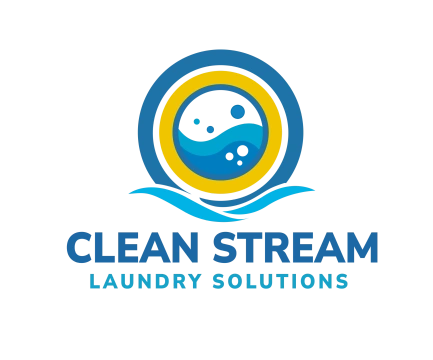

One view of the collection
Designed a customer-facing Flutter application that makes card inventory, value, wishlist, favorites, and progress understandable at a glance.
Flutter / Dart / Responsive mobile UI
I build mobile and full-stack systems for the messy part after the prototype—real users, live data, payments, hardware, and measurable outcomes.

02 / SELECTED SYSTEMS
I care about what happens after code leaves the editor: security, deployment, adoption, revenue, iteration, and the real operational constraints that make software useful.
SYSTEM 01 / LIVE
A collection platform built end to end—and operated for users across 52 countries.
Designed a customer-facing Flutter application that makes card inventory, value, wishlist, favorites, and progress understandable at a glance.
Built a custom card scanner using OCR, then connected camera input to normalized card data, filtering, and search so collectors can move from a physical card to the right digital record.
Designed the Supabase backend and Row Level Security model for per-user isolation, subscription state, collection history, and feature entitlements.
Instrumented Firebase Analytics and Cloud Messaging for product insight and notifications, added language and currency localization, and managed releases for users across 52 countries on iOS and Android.
PRODUCTION CAPABILITY MAP
A purpose-built camera and OCR flow translates physical cards into fast digital lookups.
Firebase Analytics reveals product behavior while Cloud Messaging delivers timely notifications.
Localized language and currency presentation supports a user base spanning 52 countries.
Supabase, PostgreSQL, and Row Level Security isolate collection and account data per user.
RevenueCat entitlements and TCGPlayer affiliate flows connect product value to sustainable revenue.
Beta distribution, compliance, releases, and iteration are managed across iOS and Android.
SYSTEM 02 / IN DEVELOPMENT

PRODUCT BUILD ACTIVE
One connected product vision for the customer carrying laundry in—and the operator keeping the entire business moving.
INTERACTIVE ARCHITECTURE / SELECT A NODE
A Flutter experience for payments, machine interaction, cycle status, maintenance requests, rewards, accounts, and location services.
Led a five-person development cycle across architecture, reviews, testing, and delivery. With that team phase complete, I now independently own the remaining application work—carrying the product from collaborative build through final execution.
03 / ENGINEERING EXPERIMENTS
FULL-STACK PRODUCT
Led delivery of a drag-and-drop web application with real-time component customization, persistence, authentication, and cloud deployment.
ANDROID / SOLO
Built a maintainable Kotlin and Jetpack reference application around the ACM Code of Ethics with search-focused navigation.
MOBILE DISCOVERY
Led development of a Flutter search interface spanning API integration, asynchronous JSON parsing, filtering, and unified result presentation.
04 / OPERATOR LOG
GUNDEX LLC
Own architecture, mobile and backend engineering, releases, monetization, analytics, and product iteration.
Clean Stream Laundry Solutions
Led a five-person development cycle; now independently completing the product and its physical-system integrations.
United States Navy
Led ten supervisors, supported 220+ personnel monthly, and replaced paper workflows with accountable digital tracking.
Impact · Action Technologies · Verizon
Advanced from Solutions Specialist to General Manager at Verizon, then translated business needs into systems, implementations, training, and measurable operating improvements across technology roles.
05 / HOW I ENGINEER
I am comfortable leading, but I am looking for a long-term engineering role where the priority is contributing excellent work, learning from strong teammates, and helping a product succeed.
Dart · TypeScript · JavaScript · Java · Kotlin · Python · SQL
Flutter · React · Node · Express · REST APIs · CI/CD
Supabase · PostgreSQL · Firebase Analytics · Cloud Messaging · RLS
Analytics · Code review · Testing strategy · User feedback · Agile delivery
06 / NEXT SYSTEM
Open to software engineering roles where ownership, curiosity, and dependable execution matter.